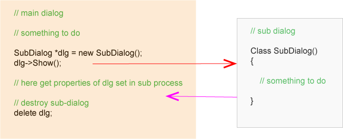

NXOpen：对话框的认识¶
发布于：2017-08-27 | 分类：CAD/CAE integration
对话框（Block UI Styler）是NXOpen二次开发中的常见对象，本文陆续记录学习和使用对话框过程中的一些认识和体会。
Apply响应事件¶
Apply按钮是在执行完Apply_cb()函数体内容后再次显示对话框，即执行dialogShow_cb()回调函数。
Apply / OK / Cancel与更新¶
NX在打开对话框之前创建了Undo Mark，点击Apply/OK提交对话框期间的所有操作，点击Cancel则回退到原始状态。即便在对话框打开期间的操作确实影响了目录树。
调用子对话框事件流程¶
在主对话框中触发显示子对话框事件后，事件进程将转移到子对话框上，主对话框自动隐藏直至子对话框事件结束（Apply/OK/Cancel/Close）。
